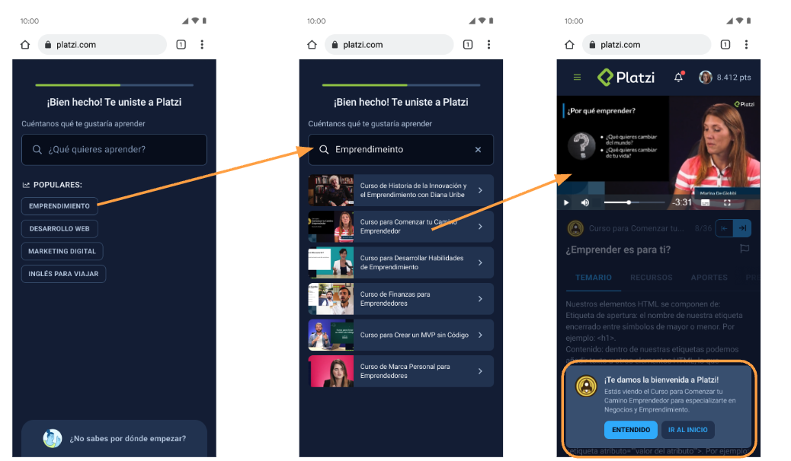

Onboarding experiments
A series of growth experiments to help new students experience Platzi’s value and build consistent study habits.
2×
Growth in Weekly Active Students from mission-based onboarding
01 — Problem
Students leaving before the aha moment
50%+
of each week’s new registrations abandoned the platform before experiencing Platzi’s value, as a result Weekly Active Students stagnated.
AHigh early churnOver half of new students churned in their first week, never reaching the moment that shows Platzi’s learning value.
BStagnant growth metricsWAS — proven to correlate with conversion and retention — stayed flat despite steady weekly registrations.
CUnclear path to valueStudents took too long to navigate from registration to relevant content.
02 — Approach
Three experiments, each built on the last
Data-drivenA/B or A/B/C tests with clear hypotheses and measurable outcomes.
Research-informedQualitative interviews explained why approaches succeeded or failed.
ProgressiveEach test’s learnings shaped the next, compounding improvements.
Direct to class
Experiment 1 of 3
Problem statement“When I finish registration and onboarding, I have to search for the course I need, which takes too long to understand Platzi’s offer.”
HypothesisIf we motivate students to watch a class immediately after onboarding, we will increase WAS.
Short-term success onlyWAS rose in week one, but by week two students were inactive again.
Low engagement depthStudents rarely watched more than two classes of the recommended course.
Unexpected behaviorSome were confused to land in a class right after registering.
Search-first onboarding
Experiment 2 of 3
Problem statement“The platform suggests themes when I register, but the terminology isn’t clear, so it’s hard to find what I’m actually looking for.”
HypothesisIf students can search for specific content instead of picking from a list, they’ll reach relevant content faster, impacting WAS.

Better initial discoveryMore students found content they were interested in at first.
Still not long-termMotivation didn’t last beyond a couple of classes or one course.
Need for explorationStudents wanted to explore before committing to a course.
Mission-based onboarding Winner
Experiment 3 of 3
Problem statement“After starting at Platzi, I lose interest because I don’t find the motivation to study consistently.”
HypothesisIf we create an extended onboarding with missions over 4 weeks, students will stay active in weeks 2 to 5, increasing WAS for those periods.
Best results achievedThe strongest outcome of all experiments, study habits built after the first month.
Gamification worksMissions balanced freedom to explore with motivation to study.
Aha moment unlockedStudents said missions helped them discover Platzi’s value in month one.
03 — Key takeaways
What I learned
01
Short-term vs. long-term
Early experiments won quick activation that didn’t last. The winner built habits over weeks.
02
Balance freedom and guidance
Students need structure (missions) and autonomy (room to explore). Forcing them into content created friction; giving them a reason to engage worked.
03
Iterate with user feedback
Pairing metrics with interviews revealed the “why” behind results, enabling smarter iteration.
04
Gamification as motivation
Simple missions and badges can provide the external push needed to establish internal habits.